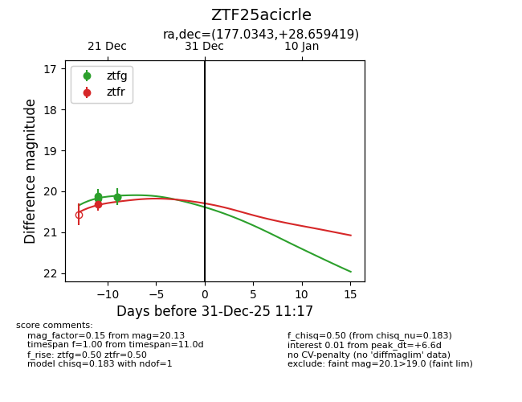
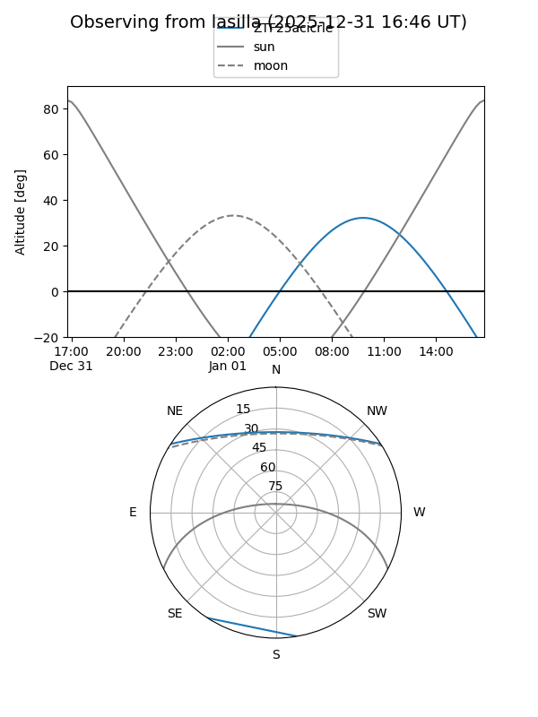
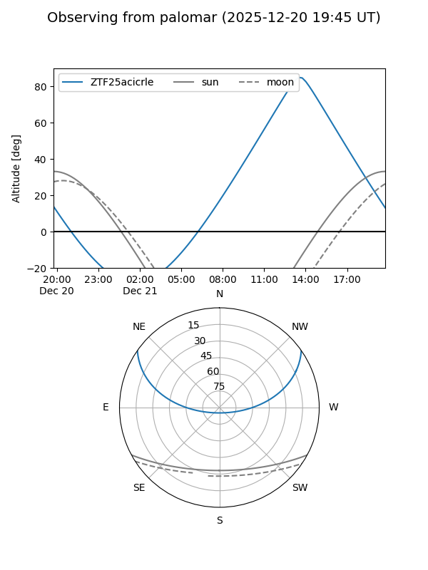
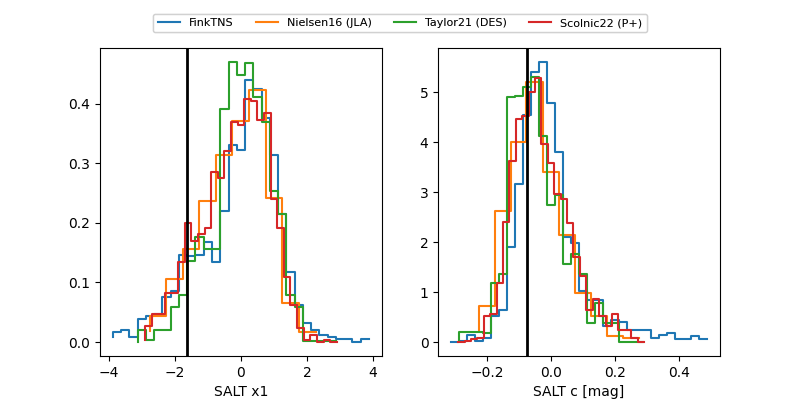

ZTF25acicrle
Target ZTF25acicrle at 2025-12-26 16:17
Aliases and brokers:
FINK: fink-portal.org/ZTF25acicrle
Lasair: lasair-ztf.lsst.ac.uk/objects/ZTF25acicrle
ALeRCE: alerce.online/object/ZTF25acicrle
alt names
ZTF25acicrle (ztf,fink_ztf)
Coordinates:
equatorial (ra, dec) = 177.0343,+28.65942
equatorial (HMS+DMS) = 11:48:08.23,+28:39:33.91
galactic (l, b) = (203.0034,+75.94039)
Flags:
Photometry:
last ztfg=20.13, ztfr=20.31
3 ztfg, 1 ztfr detections
Lightcurve

Visibility


Additional plots
